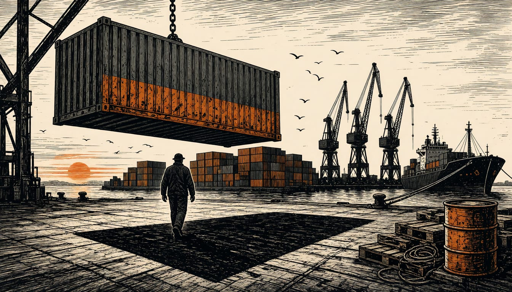

Opinion
Prices won the election. Europe still has no shield for port pay.
The tariffs that squeeze our freight and shifts survived the midterms untouched, because no Congress gets a vote on them. The Commission and member states owe port workers a costed plan before year end.

The tariffs that squeeze our harbours did not lose last night's 2026 US midterm elections, and no European government should pretend they did. Americans voted on the price of everything, and the Democrats took both chambers of Congress on 3 November. AP called it a strong rebuke, and Trump's approval rating hit 38 percent, historically low for a president at midterms. In the port cities of Europe we watched that result and asked one question: does any of it lift the threat hanging over our freight, our fuel and our shifts? It does not. Congress changed hands. The power that puts a tariff on European goods did not, and it still sits on one man's desk.
The part our capitals keep missing is where the tariff power now lives. The Supreme Court struck down the emergency tariffs in February 2026, and the administration simply moved them under Section 301, which lets the president act with no vote by lawmakers. Both chambers are now in Democratic hands. That changed nothing about it. Before the vote, James Smith of ING did not rule out new tariffs aimed at Europe, and said a divided Washington could push the president toward unilateral trade powers. That was the warning our ministers should have carried to Brussels months ago. No American voter gets to fire a Congress over what it does to European exports, because Congress has no vote on it.
Nobody in Washington was punished for the tariffs either. About two-thirds of voters in an election-day survey said the tariffs had hurt the economy, and 89 percent told CBS exit pollsters the cost of living was a major or crucial factor in their vote. Prices won the election and the tariff machine walked through it untouched. The president, for his part, told CBS News he believed Democrats would want to work with him, while posting a picture of a red veto cap. ING economist James Smith did not rule out new tariffs aimed at Europe, for a simple reason: trade, he said, is a power the president wields unilaterally, without Congress. A hostile Congress could push him further that way, not fewer. Smith's warning is already on the record. That is not caution, it is leaving the bill with the dockworker.
There is a real objection, and it is this: a divided Washington starts fewer trade fights, and gearing up safeguards now looks like alarm while the ports are busy and the cranes are moving. That is the best version of the case. It fails on one checkable fact. We said already how the tariffs survive without a vote in Congress, and Smith warned that the new split in Washington could drive the president towards more unilateral tools, not fewer. Busy quays are exactly when the bill lands unnoticed, not evidence against it.
So the Commission owes this before year end: a costed assessment, in euros, of what the next unilateral round would cost European freight rates, fuel prices and port jobs, published for everyone who pays. And the member-state governments should put targeted support for port and haulage workers on the table now, funded nationally, so that when a trade fight comes, the dockworker and the small shipper are not left to settle it alone on the quay at six in the morning.